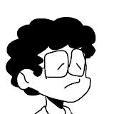

sobre mim:

Meu nome é Mateus Chaves, tenho 17 anos e estou cursando o ensino médio técnico de informática, atualmente no terceiro ano. Possuo experiência prática com criação de códigos algorítmicos utlizando JS na ferramenta VSCODE e experiencia extracurricular com animação digital.
Habilidades
- Criação de websites simples em html e CSS
- Criação de jogos eletronicos simples em webgl (Navegador) utilizando a ferramenta Turbowarp
- Criação de history board
- Utilização adequada de softwares de animação como Blender e Pencil 2D